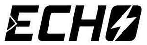

Trade Mark Journal No.2025/019 9 May 2025
UK00004182007 31 March 2025 (9,35)
Mark 1

Mark 2
- Class 9
- Circuit breakers; Miniature circuit breakers (MCBs); Moulded case circuit breakers (MCCBs); Residual current circuit breakers (RCCBs); Residual current devices (RCDs); Residual current breakers with over-current protection (RCBOs); Arc fault detection devices; Combined moulded case circuit breaker and RCD units; Fuses; Fuse boxes; Surge protectors; Electrical surge and spike protection units; Surge protection apparatus; Distribution boards; Electrical circuit distribution board panels; Busbar chambers; Rotary isolators; Mains isolators; Boxed isolators; Door interlocked isolators; Enclosed switch disconnectors; Enclosed switch fuses; Enclosed changeover switches; Enclosed direct-on-line (DOL) switches; Enclosed automatic transfer switches (ATS); Switches; Switch socket outlets; Switchgear; Apparatus and instruments for controlling electricity; control apparatus (electric); controllers to remotely monitor and control the function and status of other electrical, electronic, and mechanical devices or systems; DIN rail terminals; Connector blocks; Timers; Timing switches; Time switches; Contactors; Electromechanical contactors; Modular contactors; Electric relays; Thermal relays; Thermal overload relays; Safety relays; Starters; Motor starters; Contact blocks; Battery chargers; Transformers; Power supply apparatus and equipment; Electric wire; Electrical components; Sockets; Plug adaptors; Plug connectors; Socket boxes; Socket outlets; RCD safety sockets; RCD protected switched interlocked sockets; Electrical adaptors; Cables and couplings; Electrical cable connectors; Electrical couplings; Electrical cable reels; Electrical leads; Electrical connectors; Junction boxes; Adaptor boxes; Enclosures, modular enclosures and housings for the aforesaid goods; Electrical fittings; Connection blocks; Electrical circuit testers; Measuring tapes; Electrical meters; Electrical detectors; Dust masks; Warning beacons; Audible warning sirens; Batteries; Rechargeable batteries; Consumer control units; Parts and fittings for all the aforesaid goods.
- Class 35
- Advertising, including advertising on the internet; marketing and promotional services; retail, online retail and wholesale services connected with the sale of Circuit breakers, Miniature circuit breakers (MCBs), Moulded case circuit breakers (MCCBs), Residual current circuit breakers (RCCBs), Residual current devices (RCDs), Residual current breakers with over-current protection (RCBOs), Arc fault detection devices, Combined moulded case circuit breaker and RCD units, Fuses, Fuse boxes, Surge protectors, Electrical surge and spike protection units, Surge protection apparatus, Distribution boards, Electrical circuit distribution board panels, Busbar chambers, Rotary isolators, Mains isolators, Boxed isolators, Door interlocked isolators, Enclosed switch disconnectors, Enclosed switch fuses, Enclosed changeover switches, Enclosed direct-on-line (DOL) switches, Enclosed automatic transfer switches (ATS), Switches, Switch socket outlets, Switchgear, Apparatus and instruments for controlling electricity, control apparatus (electric), controllers to remotely monitor and control the function and status of other electrical, electronic, and mechanical devices or systems, DIN rail terminals, Connector blocks, Timers, Timing switches, Time switches, Contactors, Electromechanical contactors, Modular contactors, Electric relays, Thermal relays, Thermal overload relays, Safety relays, Starters, Motor starters, Contact blocks, Battery chargers, Transformers, Power supply apparatus and equipment, Electric wire, Electrical components, Sockets, Plug adaptors, Plug connectors, Socket boxes, Socket outlets, RCD safety sockets, RCD protected switched interlocked sockets, Electrical adaptors, Cables and couplings, Electrical cable connectors, Electrical couplings, Electrical cable reels, Electrical leads, Electrical connectors, Junction boxes, Adaptor boxes, Enclosures, modular enclosures and housings for the aforesaid goods, Electrical fittings, Connection blocks, Electrical circuit testers, Measuring tapes, Electrical meters, Electrical detectors, Dust masks, Warning beacons, Audible warning sirens, Batteries, Rechargeable batteries, Consumer control units; provision of information, advisory and consultancy services relating to all the above services.
Deligo Limited
Representative: Barker Brettell LLP